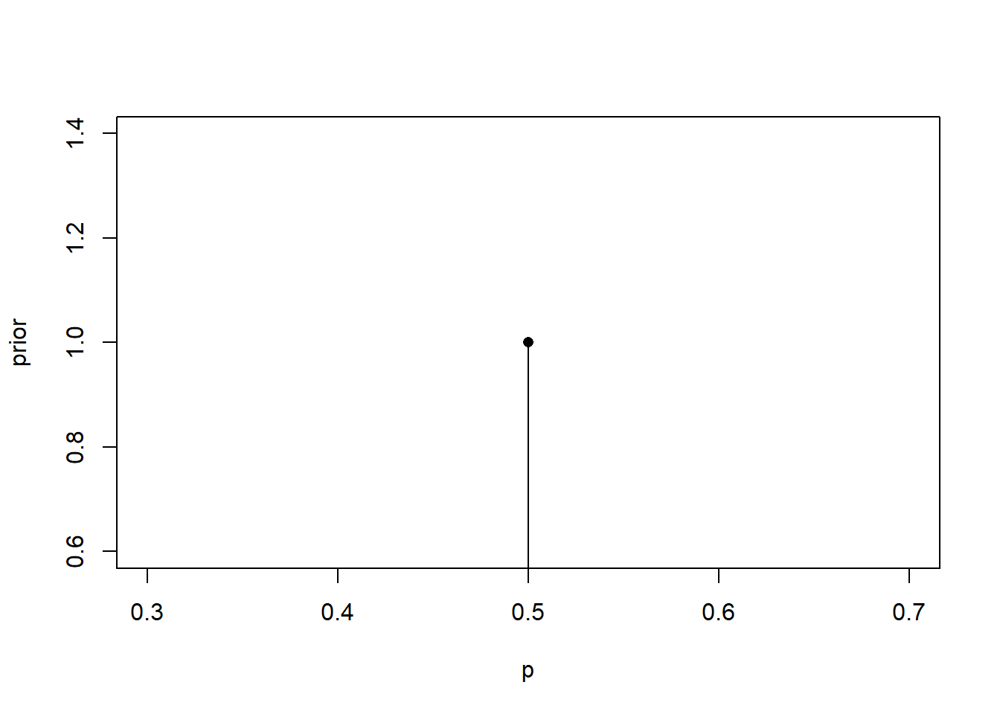
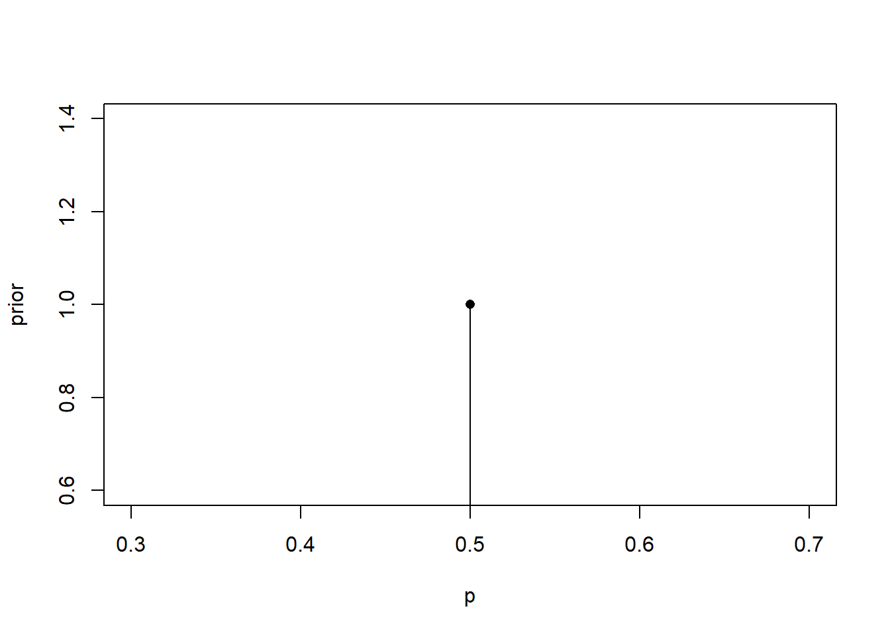
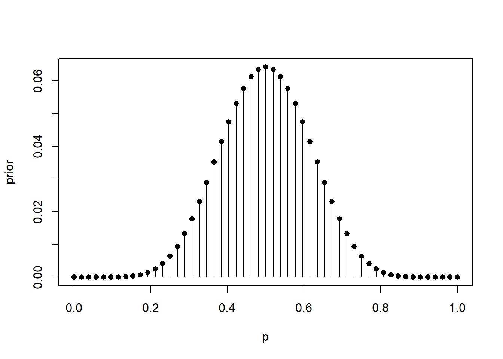

plot(0.5, 1, xlab = "p", ylab = "prior", type = "h")
points(0.5, 1, pch = 16)
G. Jay Kerns ![]()
In our last post we discussed the proverbial deck of cards and we did so to set up our “universe” we can use to think about priors we are going to take to be reasonable in a given problem. But we will need something to put a prior on, first. So here we go. Suppose our random experiment is to “pick a card, any card”.1 We select one card at the deck at random, and suppose we thoroughly shuffled that deck ahead of time. We would like to learn about
\[ p = \Pr(\text{selected card is Red}). \]
Simple enough, right? Trivial, even? It has to be \(p = 1/2\), because we have 52 cards, we shuffled the cards well, and the number of Hearts \(\heartsuit\) plus Diamonds \(\diamondsuit\) equals the number of Clubs \(\clubsuit\) plus Spades \(\spadesuit\), so it couldn’t be anything other than \(1/2\), right?
Limiting attention to the standard deck that has been perfectly shuffled where the card is randomly selected is going to terminate our conversation pretty soon. Our prior distribution for \(p\) will put 100% prior probability on the value \(\Pr(\text{Red}) = 1/2\), and all other values of \(p\) will have prior probability zero. Here is what our prior distribution would look like in that case:
plot(0.5, 1, xlab = "p", ylab = "prior", type = "h")
points(0.5, 1, pch = 16)
What a boring prior! And the heck of it is, with a prior focused entirely on \(p = 1/2\), we are effectively ruling out any possible alternative value of \(p\) and—as we will soon see—no measure of observed data could ever change our mind; we are doomed, therefore, prisoner to our own preconceived notions.
We could spice it up a little bit by supposing that the deck is maybe not so perfectly shuffled, or maybe the selection isn’t entirely random, and we will go that way eventually, but before heading down that path let’s consider another route of inquiry.
Okay, so let’s suppose that we still have 52 cards, which still all belong to the usual ranks and suits, but maybe we can’t guarantee that the deck has exactly one each of the 52 representative cards. Say, for example, we dumped a whole bunch of decks into an inexplicably huge bucket, and then constructed our “deck” from the cards in the bucket.2 What would \(\Pr(\text{Red})\) be now? How can we represent our prior beliefs about \(p\) in this case?
Here we can’t guarantee there are any red cards at all in our deck, let alone a proportion precise 50%. But what can we say? If we shuffle our deck well and do our best to select a card randomly, there are many plausible values for \(p\). If there are zero red cards, then \(p = 0\). If there are 52 red cards, then \(p\) equals 1. And if there are 7 red cards, then \(p\) will presumably be in the neighborhood of \(7/52\). So our “universe” of \(p\) values are then \(0\), \(1/52\), \(2/52\), \(\ldots\), \(1\)—including 0, there are 53 grid values. In the absence of further information, a naive first guess (maybe we appeal to ignorance or symmetry) might distribute the prior probability uniformly over the possible values, like this:
p_grid <- (0:52)/52
prior <- rep(1, 53)/53
plot(p_grid, prior, type = "h", xlab = "p", ylab = "prior")
points(p_grid, prior, pch = 16)
This is cool and all, but do we really believe that all possible values of \(p\) are equally likely in our prior? That is, it’d take us a while drawing cards out of buckets to construct a deck with all red cards (\(p = 1\)) or all black (\(p = 0\)), and I don’t know that I want to work that hard. Actually, if we just randomly selected cards from the bucket we could guess that the value of \(p\) is likely going to be somewhere not far from \(1/2\), but maybe above or below, something like this:
y <- dbeta(p_grid, shape1 = 9, shape2 = 9)
prior <- y/sum(y)
plot(p_grid, prior, type = "h", xlab = "p", ylab = "prior")
points(p_grid, prior, pch = 16)
(Nothing special about the shape1 = 9 and shape2 = 9 above, just so they match to make the graph symmetric about \(p = 1/2\). It is fun to plug in different values for shape1 and shape2 to see how the graph changes.)
The point isn’t that there is some unequivocally correct choice for what the prior has to be, the point is that we have the freedom to set the prior to whatever we want it to be, and the model has the flexibility to give us our heart’s desire. For instance, maybe we have an affinity for red cards, and we constructed the deck with purt’ nigh 70% red cards, but we weren’t very careful about it. We could choose our prior this way:
y <- dbeta(p_grid, shape1 = 700, shape2 = 300)
prior <- y/sum(y)
plot(p_grid, prior, type = "h", xlab = "p", ylab = "prior")
points(p_grid, prior, pch = 16)
All of our prior probabilities on our p_grid are nonzero, so we have escaped our shackles of overconfidence, but we are also pretty dog-gone sure that \(\Pr(\text{Red})\) is close to 70%.
The prior possibilities are endless; we are limited by imagination only. A lot of Bayesian people/courses jump straight to the dbeta when introducing the one parameter problem (my course did), and not that there’s anything wrong with that, but I enjoy thinking about this example because it is concrete enough to get specific about what the proper interpretations of p_grid values are, and at the same time flexible/varied/robust enough to stomp out some useful ground in the space of priors that might be reasonable in a given problem.
@online{jaykerns2022,
author = {G. Jay Kerns},
editor = {},
title = {The Prior Possibilities Are Endless},
date = {2022-12-09},
url = {https://gjkerns.github.io/posts/2022-12-09-playing-with-priors},
langid = {en}
}